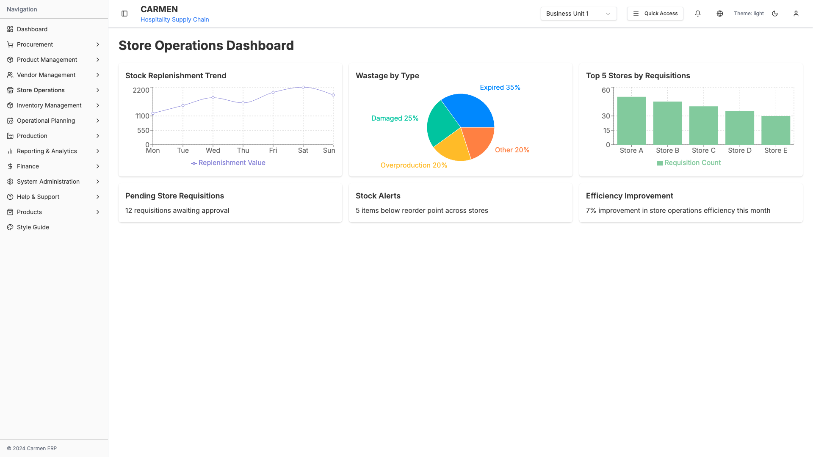
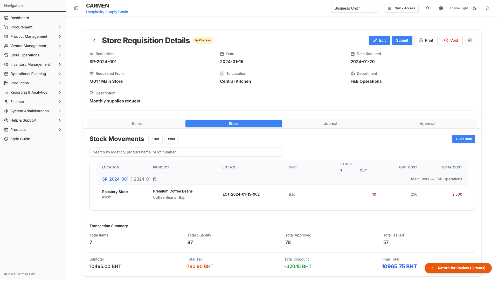
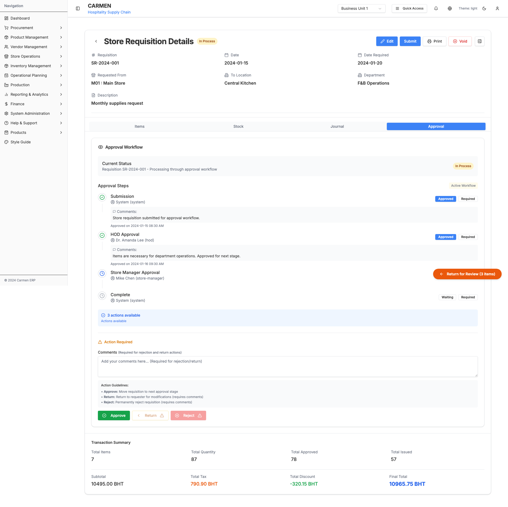

Store Operations Module - Screenshot Documentation
Capture Date: October 2, 2025
Viewport: 1920x1080 (Desktop)
Total Screenshots: 11
Overview
This document provides a comprehensive visual documentation of the Store Operations module, including all major pages, states, and interactions.
1. Store Operations Dashboard
File: store-operations-dashboard.png (122K)
URL: /store-operations
Description: Main dashboard for Store Operations module showing overview cards and navigation to sub-modules.

2. Store Requisitions
2.1 List Page - Table View
File: store-requisitions-list-table.png (208K)
URL: /store-operations/store-requisitions
Description: Store requisitions displayed in table format with columns for requisition details, status, and actions.

2.2 List Page - Card View
File: store-requisitions-list-card.png (293K)
URL: /store-operations/store-requisitions
Description: Store requisitions displayed in card format for improved readability and visual hierarchy.

2.3 Filter Dialog
File: store-requisitions-filters.png (294K)
URL: /store-operations/store-requisitions (Filter dialog open)
Description: Advanced filtering options for store requisitions including status, date range, location, and priority filters.

3. Store Requisition Detail Page
Base URL: /store-operations/store-requisitions/SR-2024-001
3.1 Items Tab
File: store-requisition-detail-items.png (190K)
Description: Displays the list of items in the requisition with quantities, costs, and approval status. Includes item details, inventory information, and inline actions.

3.2 Stock Movements Tab
File: store-requisition-detail-stock-movements.png (160K)
Description: Shows stock movement history and transactions related to the requisition items.

3.3 Journal Entries Tab
File: store-requisition-detail-journal.png (188K)
Description: Displays financial journal entries associated with the store requisition, including accounting transactions and financial impact.

3.4 Approval Workflow Tab
File: store-requisition-detail-approval-workflow.png (246K)
Description: Shows the complete approval workflow with approval stages, approvers, status, and approval history. Includes approval actions and workflow visualization.

4. Stock Replenishment
File: stock-replenishment-dashboard.png (154K)
URL: /store-operations/stock-replenishment
Description: Dashboard for managing stock replenishment requests and monitoring inventory levels.

5. Wastage Reporting
File: wastage-reporting-dashboard.png (155K)
URL: /store-operations/wastage-reporting
Description: Dashboard for reporting and tracking product wastage with categorization and analysis tools.

Module Features Captured
Store Requisitions List
- ✅ Table view layout
- ✅ Card view layout
- ✅ Advanced filtering system
- ✅ Sorting and search capabilities
- ✅ Bulk actions support
Store Requisition Detail
- ✅ Items management
- ✅ Stock movements tracking
- ✅ Journal entries view
- ✅ Approval workflow visualization
- ✅ Header with key information
- ✅ Status badges and indicators
Other Modules
- ✅ Stock Replenishment dashboard
- ✅ Wastage Reporting dashboard
- ✅ Store Operations main dashboard
Tab Structure (Store Requisition Detail)
The Store Requisition detail page uses a tabbed interface with the following tabs:
- Items - Line items in the requisition
- Stock Movements - Related inventory movements
- Journal Entries - Financial accounting entries
- Approval Workflow - Approval process and history
Note: The current implementation does not include Comments, Attachments, or Activity Log tabs. These features may be added in future updates.
Technical Details
Screenshot Specifications
- Resolution: 1920x1080 pixels
- Format: PNG
- Browser: Chromium (Playwright)
- Capture Mode: Full page screenshots
- Wait Strategy: Network idle + 1-2 second delays
File Locations
All screenshots are stored in:
/Users/peak/Documents/GitHub/carmen/docs/documents/store-ops/
Usage Notes
- Navigation: All pages are accessible from the Store Operations main menu in the sidebar
- Responsive Design: Screenshots captured at desktop resolution (1920x1080)
- Dynamic Content: All screenshots show actual data from the mock data system
- Interactive Elements: Dropdowns, filters, and modals captured in their open states where applicable
Next Steps
To enhance the documentation, consider adding:
- Mobile viewport screenshots (375x667, 768x1024)
- User interaction flows (video recordings)
- State variations (empty states, error states)
- Loading states and transitions
- Comments, Attachments, and Activity Log tabs (when implemented)